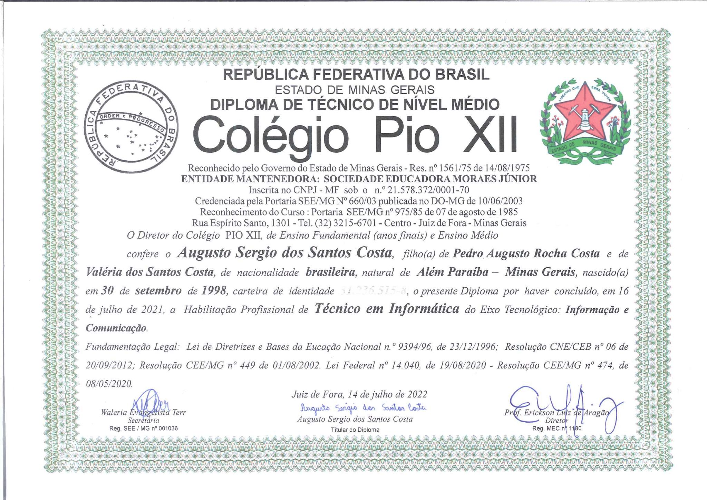
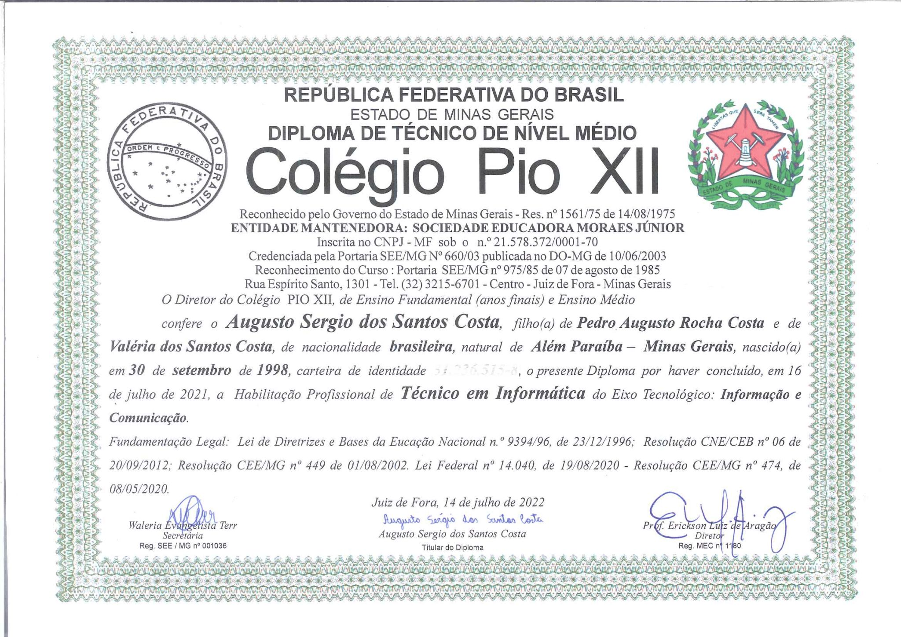

Formação
Página destinada a apresentação das formações acadêmicas e complementares.
Menu:
Formação:
Ensino Médio Completo
Colégio dos Santos Anjos, Colégio Santos Anjos, Além Paraíba, Brasil. (2014-2016)
Técnico em Informática
Colégio Politécnico Pio XII, Colégio Pio XII, Juiz de Fora, Brasil. (2019-2021)
Graduando em Sistemas de Informação
Faculdade Metodista Granbery, FMG, Juiz de Fora, Brasil. (2022-atual)
Formação Complementar:
Idiomas:
- Língua Portuguesa: Nativo
- Língua Inglesa: Nível Avaçado
Associação Cultural Brasil-Estados Unidos, ACBEU, Juiz de Fora, Brasil.
(2018-2020)
Certificados:
Para visualizar os certificados no tamanho original basta clicar na imagem.


 
